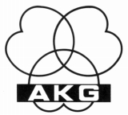
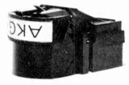
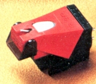
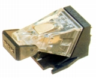
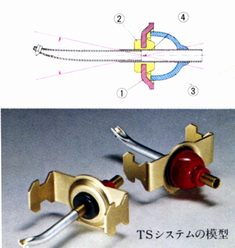
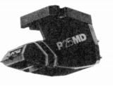
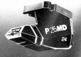
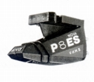
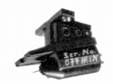

AKG（ エーケージー（アーカーゲー））
1947年創立のヘッドフォン、マイクロフォンを得意とするオーストリアの音響機器メーカー。ヘッドフォンの分野では老舗海外ブランドの一つ。「AKG」とは、“アコーステック・アンド・シネマ・エクイプメント・リミテット”（ドイツ語で Akustische und Kino-Geraete Gesellschaft m.b.H）の略で、ドイツ風に「アーカーゲー」と呼ばれることが多い。
Stereo Sound YEAR BOOK 1973ではマイクロフォンは記載されているが、まだアナログ関連製品については紹介されていなかった。手元資料では1974年時点でパイオニアエンタープライズによりカートリッジが紹介されている。それ以降は1990年初頭まで安定して輸入されていたようだ。1980年代にはエーケージー・ジャパン・サービスが代理店となり総括して扱うようになり、1990年代に�慨CJ・AKGを経て、現在の代理店ハーマン・インターナショナルとなったが、手元資料でアナログ製品が確認できるのは1990年のエーケージー・ジャパン・サービス時代までだ。
AKG（ エーケージー（アーカーゲー））のアナログ関連製品で管理人の手元に資料があるのはカートリッジのみである。すべてMI型。
�T.カートリッジ(MI型）
同社のカートリッジは、MI（ムービング・アイアン）型を採用していた。こうしたタイプの常で、可動部にマグネットを持たないことによるの振動系の軽量化、それによる追従性の向上・軽針圧化が可能、としていた。
�@PUシリーズ
同社の製品ではやや重針圧の1970年代中盤のシリーズ。

(PU4E)�APシリーズ
PUシリーズより軽針圧化が進んだ70年代後半以降のモデル。型番が2桁になった80年代モデルではさらに軽針圧化が進んだが、出力電圧も小さくなった。


(左 P6R 右 P8ES)・AKG TS（Transversal
Suspension）システムについて
P6R〜P8ESまでの初期Pシリーズのカタログで、セールスポイントにしていたのが、TS（Transversal
Suspension）システム、と呼ぶカンチレバー保持メカニズである。ワイヤーや一般的な弾性材を使わないもの、だったようだ。P10ED/L〜P25MDには引き継がれたようであるが、日本語サイトにはほとんど情報がない。その為、「PUシリーズ」時代にあった技術かも、「NOVAシリーズ」以降に引き継がれたのかも、不明である。

カンチレバーより僅かに径の大きな「�@ サスペンション・プレート」と、厳密に硬度管理した「�A スタイラス・サスペンション」で保持したナイフエッジ形式の一点支持機構、らしい。スタイラス・サスペンションは、ダンパーとしても機能するそうだ。さらに上級機(P8E以上）では、独自開発の「�B 半休状ダンパー」により適切な制動をあたえていた。このダンパーはAKGが開発した0度〜50度の温度領域で安定した動作をするものだという。このTSシステムにより、カンチレバーの運動中心は一点�Cに集中する。

(P25MD)
(P25MD/24)�BNOVAシリーズ他
バンデンフル針を採用したNOVAシリーズ。同社の最高額モデルP-100LEv.d.H�Uもここに含める。


（左 P8ES Nova v.d.H�U 右 P-100 LE v.d.H�U) P8ES Nova v.d.H�U P-100 LE v.d.H�U
Super Nova P8ES
なお海外のサイトでは現行モデルらしい機種でP-4及びP-5というモデルをみたことがある。